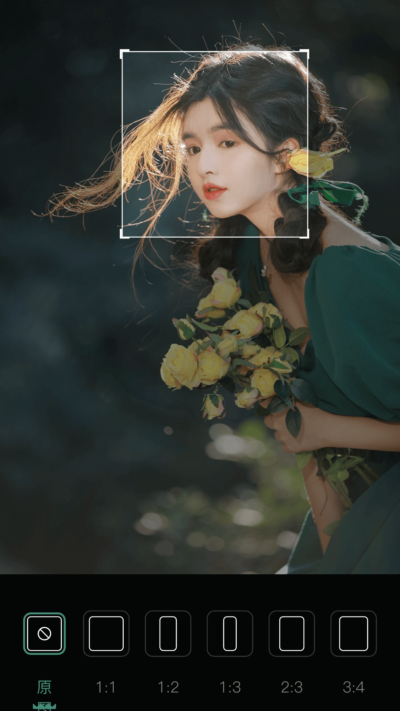

我装 MM131 用了三天，说点真的
作为一个常年在手机里存壁纸和 Vlog 素材的人，MM131 这套图库里装的内容比我预想的要杂得多。界面、搜索、下载、音乐相册、性能表现，三天里摸了个遍，下面说的都是亲身体验，不带公关话术。
为什么我会去装它
说实话，一开始我以为这就是个壁纸 App。
那天帮朋友的婚礼准备素材，她想要一套能做成音乐相册的照片，又不想自己一张张从云盘里翻。我随手搜了一下，看到有人提到 MM131官网 这个名字——好像圈子里传了挺久，但我之前从没正儿八经用过。抱着"闲着也是闲着"的心态下了一个，本来没指望太多，结果三天下来把我手机里原来装的三个同类 App 都删了。
第一眼：界面干净得不像是同类产品
安装包从官方下载拿下来直接装，没有弹窗、没有要求一堆没必要的权限。打开之后是一个底部四栏的布局：发现、分类、搜索、我的。配色比较克制，没有花里胡哨的渐变按钮，就是大白底配黑色文字和彩色标签，第一眼就给我留下了"不闹腾"的好印象。
这点很重要——很多图库类应用一打开就是满屏的小广告位和红点提醒，用着用着就烦了。MM131 至少在界面这一点上，把重点放在图片本身了。
最惊喜的是搜索，最意外的是音乐相册
搜索：终于不是"只能搜美女"
我先去搜了一下，想看看是不是跟其他竞品一样只有那几个热门词。结果输入"窗边 逆光"，联想栏居然出现了"窗边 逆光 人像""窗边 逆光 摄影"这样的二级建议，搜出来的结果也对。我再试了一下换同义词，把"街拍"换成"街景"，结果还是能出来东西——虽然数量少一些，但总比搜不到强。
后来翻了一圈才知道，它是从 v4.72 之后才做的模糊匹配和实时联想。说实话，如果之前就是现在这套搜索能力，我应该早就装上了。

音乐相册：从没想过会在一个图库里做视频
这个功能是我没想到的。本来 MM131 给我的印象就是看图和下壁纸，点进去发现居然有完整的视频剪辑和音乐相册制作功能。我拿刚才给朋友准备的婚礼照片试了一下，选了内置音乐库里的一首"温暖治愈"分类的曲子，十五张照片一键就能转成视频。
音乐来源有两种：内置库和本地导入。内置库是分了轻快活泼、温暖治愈、动感节奏、抒情慢歌和纯音乐几个分类，点预览就能试听；本地导入支持 MP3、WAV、AAC、FLAC 这些主流格式。调节的地方也挺细：音乐音量、原视频音量、淡入淡出、自动适配时长、手动裁剪、甚至还有节拍卡点。
我把音乐音量调到 40%，把开头结尾各加了两秒的淡入淡出，导出的成片比我之前用某个单独装的视频剪辑 App 做出来的还要顺手——主要是素材不用来回导，就在同一个应用里选图、配乐、导出，省了好几个来回的导出导入。
性能这点我必须说：它真的很快
我用的是 iPhone 14 Pro，打开一张 50MB 左右的原图大概 0.5 秒。查了一下 MM131文档，iPhone 15 Pro 能做到 0.3 秒，iPhone 13 是 0.8 秒，更老的 iPhone 在 1~1.5 秒之间。iOS 上的这个速度是芯片级优化来的，不用额外设置，装上就是快。
安卓用户如果觉得慢，可以在设置里关掉电池优化限制、允许后台运行，尽量装到内部存储而不是 SD 卡。另外在移动数据网络下建议把图片加载模式切成"预览图优先"，确认要细看的时候再手动加载原图——地铁里信号不好的时候，这个设置能省不少流量。
还有几个小细节做得不错：
- Wi-Fi 下自动加载原图——移动数据先给预览图，不着急；
- 仅 Wi-Fi 下批量下载——设置好任务，等晚上回家自动跑；
- 缓存别清太勤——浏览过的图片会被缓存，清了就得重新加载，除非存储实在紧张；
- 加载慢了按四步排查——网络 → 清缓存 → 重启应用 → 更版本，这套流程在应用的设置板块里有写，比自己瞎试靠谱。
多语言是加分项，但不是刚需
切换语言这件事我本来没太在意，直到上次去日本玩，想搜当地风格的和风照片，切成日语界面后用"森ガール"搜出来的结果比中文"森系少女"更地道。四种语言——简体中文、英语、日语、韩语，覆盖了它主要用户群所在的地区，切换只要一两秒，不用重启应用。
更贴心的是，收藏夹、浏览历史这些东西是跟着账户走的，切语言不会丢。这点很到位。
什么人适合，什么人可能觉得用不上
适合的：
- 喜欢攒壁纸的，日常就爱换桌面的人；
- 想做音乐相册但不想装太多 App 的人（我就是这类）；
- 对下载速度敏感，用老旧设备也不想看到 loading 的人；
- 偶尔需要切换语言界面的用户。
可能觉得没必要的：
- 只在特定平台（比如某一个壁纸社区）找图的人；
- 对"又能看又能剪视频"这种多功能需求不感冒，觉得一个 App 干一件事就够的人。
最后说一句
MM131 这套东西给我的感觉是"不张扬"——没有那种到处弹通知的急切，界面也不做多余的装饰，该快的地方真的快，该省的流量真的省。搜一张图、下一张壁纸、拼一张音乐相册，三天下来我已经把手机里原来装的那几个同类型应用都卸了，不是因为它功能多到碾压同行，而是因为它在我真正会用到的那几件事上，每一件都做得让人舒服。
我用的是官方的安装包，从官网拿的，全程没遇到过弹窗和莫名其妙的权限要求。多语言切换的设置入口也在"我的"页面的齿轮里，点进去选就行，真遇到加载慢的时候，按它文档里给的四步排查流程走，基本都能解决。
这套资料我在三个平台都留了备份：GitHub 上有完整的分类目录，国内用户如果 GitHub 访问不顺畅，可以去 Gitee 或者 GitCode 找同一个仓库，路径都一样。